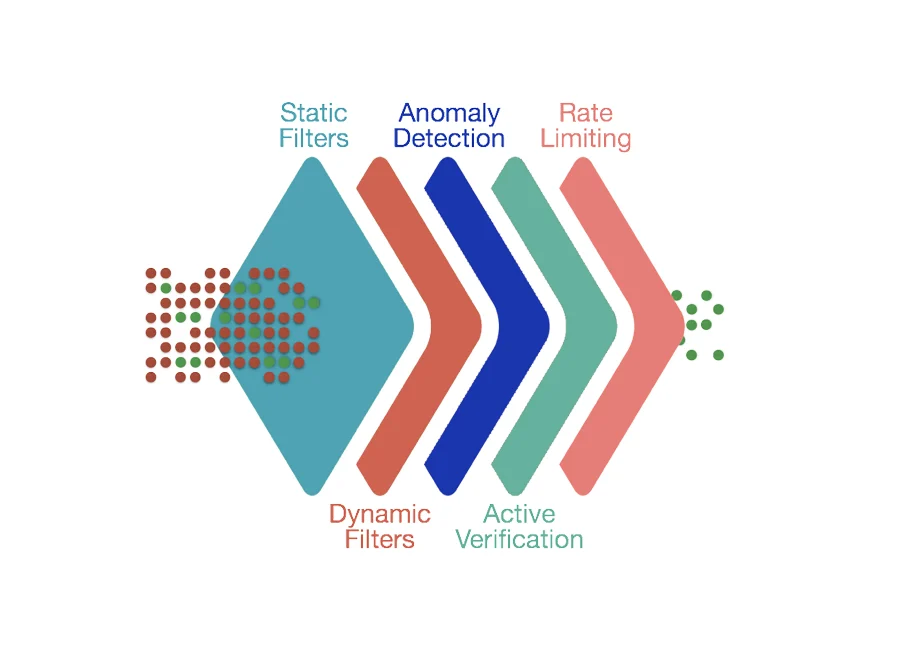
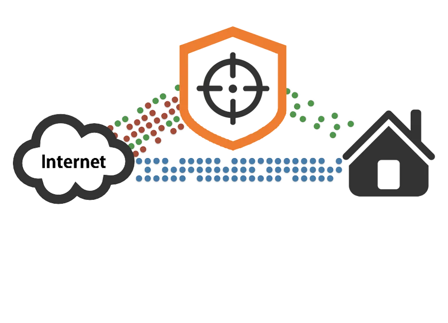
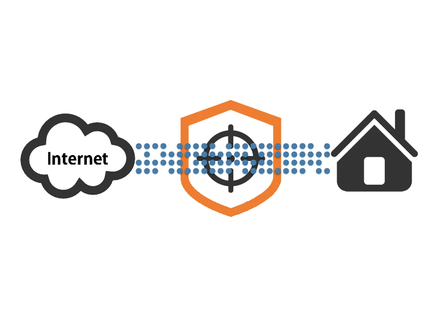
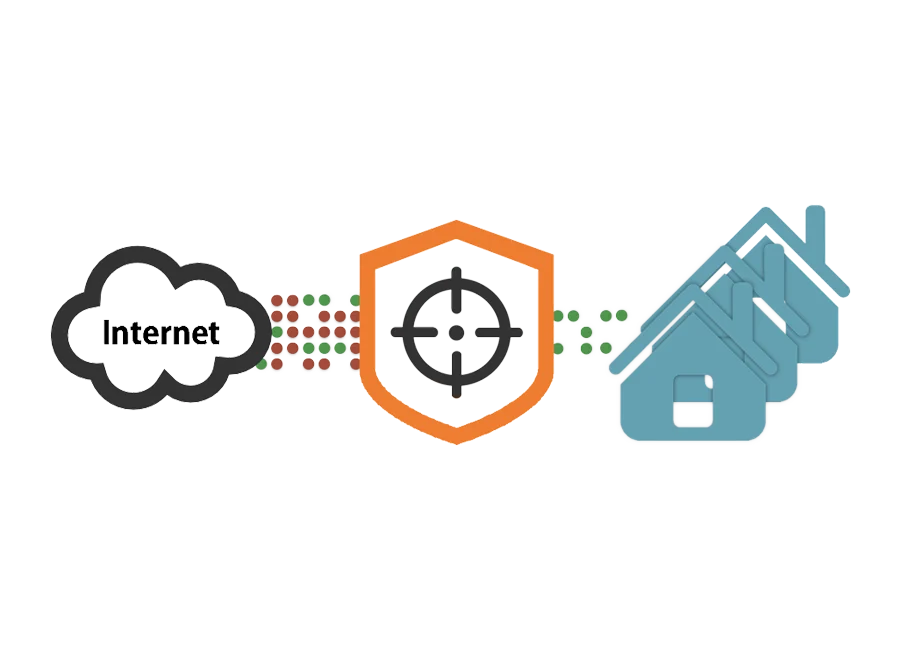

nScrub

Локальное программное обеспечение для предотвращения DDoS-атак
скорость линии
масштабируемая архитектура
режим диверсии или моста
Рекомендация
Кому стоит выбрать nScrub
nScrub — это локальная программная защита от DDoS-атак. Выбирайте его, если хотите фильтровать атаки внутри вашей собственной инфраструктуры, в качестве прозрачного моста или маршрутизатора с перенаправлением BGP на обычном оборудовании.
- Вам нужно смягчение последствий на вашей территории, а не служба облачной очистки.
- Вам нужно начать с 10+ Gbps и масштабироваться до Терабит/с с помощью модульной конструкции.
- Вы обслуживаете несколько клиентов или сетей, и вам нужны отдельные профили смягчения последствий.

Идеальный вариант использования
Идеальный вариант использования для nScrub
- Среда: Интернет-провайдер, центр обработки данных и корпоративные сети. Режим моста не требует изменения маршрутизации, режим маршрутизатора работает с перенаправлением BGP.
- Команда: сетевые операторы, которые управляют политиками смягчения последствий через веб-интерфейс и REST API.
- Технические требования: 4 ядра с частотой 3 ГГц снижают 10 Gbps на скорости линии, а производительность масштабируется с увеличением количества ядер. Аппаратный обход доступен для постоянно включенных настроек.
- Проблема решена: многоуровневое применение, проверка сеанса, черные списки, ограничение скорости, сигнатуры и обнаружение аномалий.
Идеально подходит для любой среды
Сценарии развертывания
Перенаправление и смягчение последствий трафика по требованию
При работе в режиме маршрутизации nScrub предлагает возможность динамически перенаправлять и смягчать трафик по требованию во время DDoS-атаки. Вместо постоянного перенаправления всего трафика через инфраструктуру смягчения последствий nScrub позволяет избирательно управлять подозрительными или связанными с атакой потоками только при необходимости. BGP — распространенный вариант, используемый для реализации этого. Такой целенаправленный подход обеспечивает минимальную задержку во время обычных операций, обеспечивая при этом быструю и эффективную защиту при угрозе. Благодаря плавной интеграции в существующие сетевые топологии nScrub в режиме маршрутизации обеспечивает гибкое перенаправление трафика по требованию, сохраняя ваши услуги онлайн и контролируя затраты на смягчение последствий.

Автоматическое смягчение последствий с помощью Transparent Bridge
Запуск nScrub в режиме прозрачного моста (Bump-In-The-Wire) обеспечивает плавную защиту от DDoS в конфигурации zero. Развернутый в режиме онлайн, nScrub перенаправляет весь трафик, нетронутый в нормальных условиях, без необходимости перенаправления трафика или изменения маршрутизации. При обнаружении атаки автоматически включается механизм смягчения, фильтруя вредоносный трафик в режиме реального времени, обеспечивая при этом бесперебойное прохождение легитимных потоков. Этот режим обеспечивает постоянную защиту с минимальной эксплуатационной сложностью, что делает его идеальным для сред, где простота и надежность имеют решающее значение.

Постоянное и надежное смягчение последствий с помощью аппаратного обхода
В средах, где время безотказной работы имеет первостепенное значение, nScrub можно развернуть в режиме прозрачного моста в сочетании с аппаратным обходом для максимальной надежности и zero сбоев. В этой настройке nScrub работает как встроенное устройство, проверяя и перенаправляя трафик без изменений в нормальных условиях. При обнаружении DDoS-атаки мгновенно и автоматически включается защита, блокирующая вредоносный трафик в режиме реального времени. Если в системе произойдет сбой питания или сбой программного обеспечения, аппаратный обход обеспечит бесперебойный поток трафика, позволяя пакетам продолжать проходить без задержек и потерь. Эта конфигурация предлагает следующие ключевые преимущества:
- Никакой настройки не требуется: настройка по принципу «включай и работай» без необходимости изменения маршрутизации или перенаправления трафика.
- Постоянная защита: автоматическое смягчение последствий только при необходимости.
- Безопасная работа: аппаратный обход гарантирует непрерывность сети даже в случае сбоя.
Благодаря такому подходу организации могут добиться надежной и прозрачной защиты от DDoS-атак с высочайшим уровнем эксплуатационной надежности.

Поддержка мультитенантности для гетерогенных сетей
При развертывании в гетерогенных сетях поддержка мультитенантности nScrub может использоваться для определения нескольких профилей снижения риска, активных одновременно в одном экземпляре, путем определения нескольких пунктов назначения. Как это работает:
- Входящий трафик разделяется на несколько виртуальных средств защиты в зависимости от IP-адреса назначения. Таким образом, можно указать политику ограничения трафика для каждой подсети назначения.
- Каждый виртуальный митигатор привязан к профилям контроля трафика: по умолчанию, белый, черный, серый. Каждый профиль содержит конфигурацию контроля трафика (например, SYN check=yes, ICMP Drop=No) и применяется к исходным IP-адресам в соответствии со списками (белый/черный/серый).
- Поддерживается глобальный или индивидуальный режим обхода для обслуживания или исключения цели.

Альтернативы
nScrub альтернативы в сравнении
Одни и те же критерии для каждого варианта: роль, когда ее выбирать, ограничения и стоимость.
Режим моста
- Роль: Встроенный, прозрачный.
- Выбирайте его, когда: Zero-конфигурация защиты и автоматическое срабатывание при обнаружении атаки.
- Ограничения: Линейное устройство; используйте аппаратный обход для максимального времени безотказной работы.
- Расходы: та же лицензия
Режим маршрутизатора с помощью BGP
- Роль: Трафик перенаправляется по требованию.
- Выбирайте его, когда: Вы хотите управлять только трафиком, связанным с атакой.
- Ограничения: Требуется BGP и проектирование маршрутизации.
- Расходы: та же лицензия
Компромиссы
Когда nScrub неправильный выбор
- Это программный продукт: вы предоставляете оборудование и возможности для атаки вашего размера.
- Он работает на вашем оборудовании: получаемая вами мощность зависит от предоставленных вами ядер.
- Разработка политики требует знаний в области сети. Плагины на C при необходимости расширяют проверки.
- Цены начинаются от 999,95 евро за модели S/M/L/XL/XXL.
Доказательство
Технические характеристики, версии, цены и документация
Ниже приведены функции, поддерживаемые платформы и протоколы, версии с ценами, ссылки на документацию и ответы на распространенные вопросы.
с первого взгляда
Ключевые особенности
- Многоуровневое регулирование дорожного движения
- Проверка активных сессий для протоколов, включая TCP и DNS
- Гибкие черные и белые списки подсетей
- DNS проверить, принудительно DNS над TCP
- Политики, подобные ACL, на основе полей UDP/TCP/ICMP
- Фильтрация на основе сигнатур, фильтрация запросов HTTP
- Обнаружение аномалий на основе поведения трафика
- Ограничение скорости в зависимости от источника, места назначения и протокола
- Поддержка плагинов для загрузки пользовательских проверок и проверки дополнительных протоколов.
- Поддержка нескольких арендаторов с настройкой нескольких профилей смягчения последствий для каждого пункта назначения.
- Веб-интерфейс с историческими графиками и статистикой.
- PCAP дамп по запросу, инициируемому механизмом сценариев, управляемым событиями

Технические характеристики
Технические характеристики
- Линукс
- Интернет GUI доступен через любой HTML5-браузер со статистикой трафика и информацией о взаимодействии.
- RESTful на основе HTTP API для настройки политик смягчения последствий
- поддержка TLS/HTTPS
- Поддержка плагинов (C)
nScrub требовалось 4 ядра с частотой 3 ГГц для снижения линейной скорости 10 Gbps. Масштаб производительности с увеличением количества ядер.
- Ethernet/VLAN
- IPv4/IPv6
- TCP/UDP/ICMP
- GRE
модели
Выберите свою модель
Вы уже установили программное обеспечение?
Выберите модель. Разные модели открывают разные функции и возможности. Проверьте сравнительная таблица.
S/M/L/XL/XXL
- Многоуровневое регулирование трафика и проверка сессий
- Режим маршрутизации
- Режим прозрачного моста
- Поддержка аппаратного обхода
- Поддержка нескольких арендаторов
Скриншоты
Галерея
Связанный
Продолжайте исследовать
Цены и выпуски
Сравните издания и способы покупки.
Решения
По варианту использования и отрасли.
Руководство пользователя
Установка и настройка.
Начать
Готовы увидеть это в своей сети?
Загрузите бесплатную версию ntopng для сообщества, сравните версии и купите в магазине или обсудите свои требования с командой ntop.